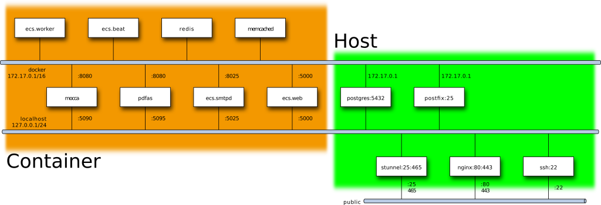

Development¶
Service Architecture¶
- Base: Ubuntu Xenial (16.04 LTS) 64Bit Standard Cloud Image
- saltstack salt is used for system installation
- letsencrypt is used for ssl host certificates
- Services running on the host system
- Webserver: NGINX 1.10 - nginx.conf
- Database: Postgresql 9.5 Database postgres config
- SMTP/SSL Proxy: Stunnel - stunnel.conf
- SSH Daemon: openssh ssh config
- SMTP Outgoing: postfix - main.cf
- Services running inside docker container
- The ECS Application (Web, Worker, incoming Mail)
- Django is served via uwsgi inside the web container
- Celery is used for asynchronous worker & beat
- python smtpd is used for incoming Mail processing
- Redis for Queuing Services
- Memcache for Caching Services
- tomcat running PDF/AS for Electronic Signed PDF Generation
- tomcat running Mocca for accessing the Digital ID-Card used for signed PDF-Generation
- The ECS Application (Web, Worker, incoming Mail)
![#### perform execution via cpp | dot
#include "dot-style.h"
#define to ->
PROCESSFLOW("ECS Service Interconnect")
edge [style=dashed]
cluster(user,"User")
prod(webclient,"Webbrowser")
prod(emailclient,"Emailclient")
endcluster
prod(nginx,"Nginx\nWebserver")
prod(stunnel,"Stunnel\nIncoming Mail Proxy")
prod(smartmx,"Postfix\nOutgoing Mailserver")
prod(ecs,"ECS-Container\nWebserver\nQueue-Worker\nQueue-Beat\nMailserver")
prod(mocca,"Tomcat-Container\nMocca - Citizen Card System")
prod(pdfas,"Tomcat-Container\nPdfas - PDF Creation")
prod(redis,"Redis-Container\nQueuing-Server")
prod(memcache, "Memcache-Container\nMemory-Cache")
prod(postgresql,"PostgreSQL\nDatabase Server")
prod(storagevault,"shared filesystem\nStorage Vault")
webclient to nginx bidir(https)
emailclient to stunnel unidir(smtp)
smartmx to emailclient unidir(smtp)
nginx to ecs bidir(http)
nginx to pdfas bidir(http)
nginx to mocca bidir(http)
ecs to postgresql bidir(sql)
ecs to redis bidir(redis)
ecs to memcache bidir(memcache)
ecs to smartmx unidir(smtp)
ecs to storagevault bidir(file)
stunnel to ecs unidir(smtp)
END](_images/graphviz-25b9323c26f05a6026efaefe73d14fadf7d396b3.png)
- The Appliance uses the default docker network (172.17.0.1/16) for docker container
- Public (Outside) facing Ports
- NGINX Webserver Ports 80(http) and 443(https)
- Stunnel Ports 25(smtp) and 465(smtpssl)
- SSH Daemon 22(ssh)

Repository Layout¶
| Path | Description |
|---|---|
| /pillar/*.sls | salt environment |
| /pillar/top.sls | defines the root of the environment tree |
| /pillar/default-env.sls | fallback env yaml and example localhost ecs config |
| /salt/*.sls | salt states (to be executed) |
| /salt/top.sls | defines the root of the state tree |
| /salt/common/init.sls | common install |
| /salt/common/env-create.sh | cli for env generation |
| /salt/common/env-package.sh | cli for building pdf,iso,tar.gz.gpg out of env |
| /salt/common/env-update.sh | get env, test conversion and write to /run/active-env.yml |
| /salt/appliance/env-template.yml | template used to generate a new env.yml |
| /salt/appliance/init.sls | ecs appliance install |
| /salt/appliance/scripts/prepare-env.sh | script started first to read environment |
| /salt/appliance/scripts/prepare-appliance.sh | script started next to setup services |
| /salt/appliance/scripts/prepare-ecs.sh | script started next to build container |
| /salt/appliance/update/appliance-update.sh | script triggerd from appliance-update.service |
| /salt/appliance/ecs/docker-compose.yml | main container group definition |
| /salt/appliance/systemd/appliance.service | systemd appliance service that ties all together |
Execution Order¶
[on start]
|
|-- prepare-env
|-- prepare-appliance
| |
| |-- optional: call salt-call state.sls appliance.storage.setup
|---|
|
|-- prepare-ecs
|-- appliance
| |
| |-- docker-compose up
:
: (post-start)
|-- appliance-cleanup
[on error]
|
|-- appliance-failed
[on update]
|
|-- appliance-update
| |
| |-- salt-call state.highstate
| |-- apt-daily unattended-upgrades
| |-- letsencrypt update
? ?-- optional reboot
| |-- systemctl restart appliance
Runtime Layout¶
Application:
| Path | Description |
|---|---|
| /app/env.yml | local (nocloud) environment configuration |
| /app/ecs | ecs repository used for container creation |
| /app/appliance | ecs-appliance repository active on host |
| /app/etc | runtime configuration (symlink of /data/etc) |
| /app/etc/tags | runtime tags |
| /app/etc/flags | runtime flags |
| /app/etc/hooks | runtime hooks |
| /app/ecs-ca | client certificate ca and crl directory (symlink of /data/ecs-ca) |
| /app/ecs-gpg | storage-vault gpg keys directory (symlink of /data/ecs-gpg) |
| /app/ecs-cache | temporary storage directory (symlink of /volatile/ecs-cache) |
| /run/active-env.yml | current activated configuration |
| /run/appliance-failed | flag that needs to be cleared, before a restart of a failed appliance is possible |
| /usr/local/share/appliance | scripts from the appliance salt source |
| /usr/local/[s]bin | user callable programs |
Data:
| Path | Description |
|---|---|
| /data | data to keep |
| /data/ecs-ca | symlink target of /app/ecs-ca |
| /data/ecs-gpg | symlink target of /app/ecs-gpg |
| /data/ecs-storage-vault | symlink target of /app/ecs-storage-vault |
| /data/etc | symlink target of /app/etc |
| /data/ecs-pgdump | database migration dump and backup dump diretory |
| /data/postgresql | referenced from moved /var/lib/postgresql |
Volatile:
| Path | Description |
|---|---|
| /volatile | data that can get deleted |
| /volatile/docker | referenced from moved /var/lib/docker |
| /volatile/ecs-cache | Shared Cache Directory |
| /volatile/ecs-backup-test | default target directory of unconfigured backup |
| /volatile/redis | redis container database volume |
Container Volume Mapping¶
| Host-Path | Container | Container-Path |
|---|---|---|
| /data/ecs-ca | ecs | /app/ecs-ca |
| /data/ecs-gpg | ecs | /app/ecs-gpg |
| /data/ecs-storage-vault | ecs | /app/ecs-storage-vault |
| /volatile/ecs-cache | ecs | /app/ecs-cache |
| /app/etc/server.cert.pem | pdfas/mocca | /app/import/server.cert.pem:ro |
Environment Mapping¶
Types of environments:
- saltstack get the environment as pillar either from /run/active-env.yml or from a default
- shell-scripts and executed programs from these shellscripts get a flattened yaml representation in the environment (see flatyaml.py) usually restricted to ecs,appliance tree of the yaml file
Buildtime Environment:
- the build time call of
salt-call state.highstatedoes not need an environment, but will use /run/active-env.yml if available
Runtime Environment:
- prepare-env
- get a environment yaml from all local and network sources
- writes the result to /run/active-env.yml
- appliance-update, prepare-appliance, prepare-ecs, appliance.service
- parse /run/active-env.yml
- include defaults from appliance.include (GIT_SOURCE*)
- Storage Setup (
salt-call state.sls appliance.storage.setup) parses /run/active-env.yml - appliance-update will call
salt-call state.highstatewhich will use /run/active-env.yml - appliance.service calls docker-compose up with active env from /run/active-env.yml
- docker compose passes the following to the ecs/ecs* container
- service_urls.env, database_url.env
- ECS_SETTINGS
- docker compose passes the following to the mocca and pdfas container
- APPLIANCE_DOMAIN as HOSTNAME
- docker compose passes the following to the ecs/ecs* container